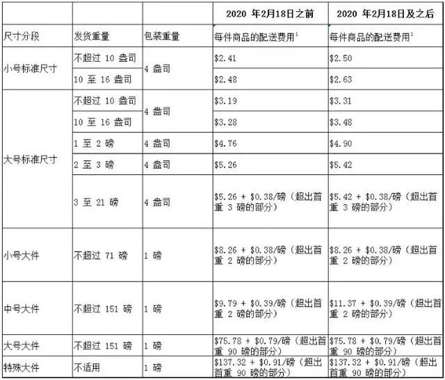
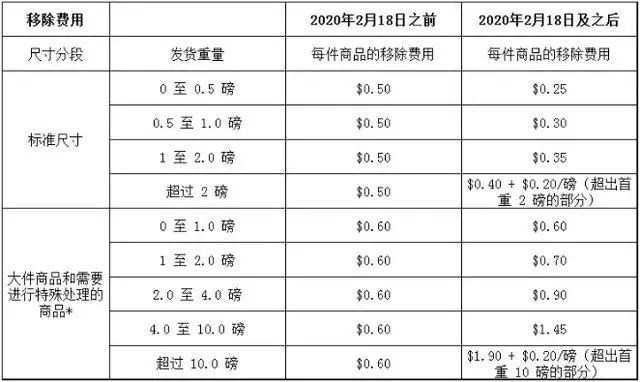
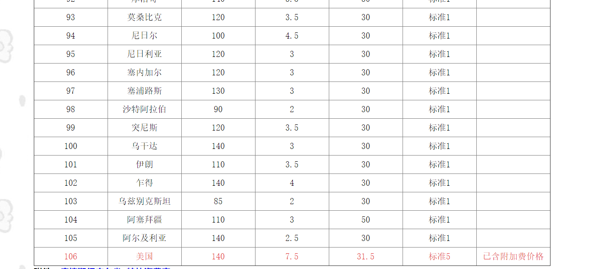
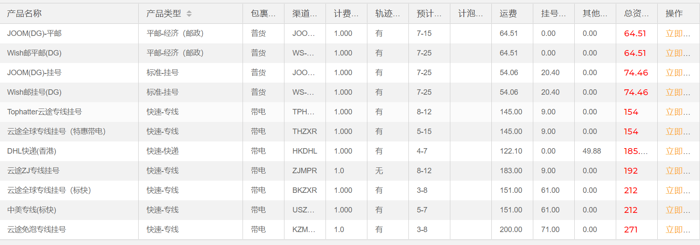

# Amazon 发货方式
亚马逊有三种发货方式，分别来如下：
- Fulfillment by Amazon（FBA）
FBA 是亚马逊物流服务，卖家先把货物发到亚马逊仓库储存，接到订单后直接从亚马逊仓库发货。整个挑选、包装、运输产品的过程都由亚马逊的工作人员操作。不仅自如此，平台还提供客户服务及退货服务。使用这种方式发货时效比较快，客户的用户体验比较好，百相当于分担了卖家的工作量。但是相应的也要向亚马逊缴纳仓库的使用费。 - Seller Fulfilled Prime（SFP）
简单的来说 SFP 就是卖家自己在海度外搭建海外仓或者和第三方的海外仓合作。物流效率和 FBA 的模式差不多。问但需要满足一定的规定才有资格使用 SFP。 - Fulfillment by Merchant（FBM）
FBM 就是卖家利用自己的资源向买家发货。当店铺有了订单后卖家再从国内将货物发往国答外，这种模式不需要囤货甚至不需要有货源，但物流时效比较慢。
# FBA
# 什么是亚马逊 FBA
这个计划允许任何人在亚马逊平台出售产品。物流对任何电商企业来说都是最大的挑战之一。通过 FBA 计划，亚马逊可以在它的仓库中存储你的产品，把产品配送给你的顾客，处理所有退款退货问题，以及提供无与伦比的客户服务。
这不意味着作为卖家的你不需要承担任何责任。它真正的作用在于，让你有大量时间关注其他高级别、能创造价值的活动，比如引流、优化转化率等。
为什么亚马逊 FBA 比其他电商更好？
FBA 计划除了可以帮你处理物流问题，它还有其他优势。其中一点就是亚马逊的配送速度要比零售商的快。FBA 可以让你获得更多的平台曝光率，从而转化成更多的销量。
FBA 还可以让你的产品符合 Prime 资格，消费者非常喜欢这个免运费两天送达的 Prime 服务。最后 FBA 最大的一个优势是，亚马逊是一个非常受信任的品牌。它一直在努力优化支付过程，赢得消费者的信任。作为卖家的你也能得到这种信誉带来的好处。
# 怎么建立 FBA 业务
要开始建立 FBA 业务，这里有 5 个基本的步骤：
- 创建亚马逊卖家账号。建议创建专业卖家账号，专业卖家账号每月需缴纳一定的费用。
- 选择利基产品。有些产品很好，有些产品则不值得涉及。做好调查，集思广益。
- 找到供应商。一旦你知道要卖什么产品了，就开始和可靠的供应商建立合作关系。向他们要求样品，计算下从下单到出货所需时间，并算下产品的利润。
- 创建产品的 listing。通过恰当的关键词和内容来优化产品页面。
- 引流。向目标客户发送产品页面，提供销量。
- 产品的价格应该介于 10 美元到 50 美元之间；
- 产品重量应尽可能轻
- 查看潜在竞争者的主类目产品销量排名是否在前 5000，或者更低
- 确保在你卖的产品类别中没有知名品牌
- 尽量销售不容易碎的产品
- 产品评价越多，竞争力越强。如果产品第一页的评价数量是 50 或者更少，这就意味着你可以打入这个市场
- 生产成本应该控制在售价的 25% 或者更少
# FBA 费用计算
# FBA 中常见计量单位换算
1 (英寸)=2.54cm (厘米)
1 lb (磅)=0.4536kg (千克)
1 oz (盎司)=28.35g
1 cubic foot (立方英尺)=28.32 cubic dm (立方分米)
# FBA 费用组成
FBA 费用包括：订单配送费、FBA 库存存储费、搬迁订单费、退货处理费、计划外服务费共 5 部分，每部分 FBA 费用细节不同。
- 订单配送费
出货订单取决于有多少重量和包装的大小。- 标准尺寸：任何重量不超过 12 盎司、最大边缘不超过 15 英寸、最大边缘不超过 0.75 英寸和包装后次要边缘不超过 12 英寸的物品。
- 大规格：所有包装货物，重量不超过 20 磅，最大边缘不超过 18 英寸，最大边缘不超过 8 英寸，二次长度不超过 14 英寸。
- 小大：不超过 70 磅的任何包装的重量，最长边不超过 60 英寸长的时间不超过 30 英寸，围护产品的最长边的边缘不超过 130 英寸。
- 中大：不大于 150 磅，最长边的最长边和过 108 英寸加周长产品的任何包装重量不超过 130 英寸。
- 大尺寸：任何包装后重量不超过 150 磅的物品，最大边缘不超过 108 英寸，最大边缘周长不超过 165 英寸。
包装的任何产品符合一个或多个下列条件：特别大超过 150 磅（单或体积重量），超过 1.08 英寸，或最长边加圆周超过 165 英寸的最长边。此外，确定了需要特殊处理或货物的配送也属于一种特殊的大件物品。

- FBA 库存仓储费
- 月度仓储费：
亚马逊会在第二个月 7-15 号之间进行收取，费用按照货物的体积进行收取：
1-9 月，标准尺寸 0.64 美元 / 每立方英尺 超大尺寸 0.43 美元 / 每立方英尺
10-12 月，标准尺寸 2.35 美元 / 每立方英尺 超大尺寸 1.15 美元 / 每立方英尺
月度仓储费：(应收取 6 个月长期仓储费的商品数量) x (单位商品体积) x (对应月份每立方仓储费)
在十月到十二月旺季期间，仓储费会比平时升高 1-2 倍。 - 长期仓储费：
如果卖家的货物在亚马逊仓库里存放超过 6 个月没有销售出去则需要缴纳这笔费用。
一般来说，亚马逊会在每年的 2 月 15 号和 8 月 15 号进行收取：
存放在 6-12 个月的产品，按 11.25 美元每立方英尺进行收取长期仓储费
存放超过 12 个月的产品，按 22.50 美元每立方英尺进行长期仓储费的收取。
长期仓储费：(应收取时间段长期仓储费的商品数量) x (单位商品体积) x (对应时间段长期仓储费的每立方收费)
值得注意的是，从 2017 年 8 月 15 日起欧洲 FBA 长期仓储费用如下：
存放 6-12 个月的产品：每立方米收取 500 欧元半年的长期仓储费
存放 12 个月以上的产品：每立方米收取 1000 欧元的长期仓储费
- 月度仓储费：
- 移除订单费
对于无法销售的产品，卖家自然会选择撤单，通常，搬迁令将在 14 个工作日内处理。然而，在假日季节和搬迁高峰期，处理搬迁订单可能需要 30 个工作日或更长时间。
自 2020 年 2 月 18 日起，亚马逊将根据重量分段按件收取移除费用
 - 退货处理费
该费用适用于亚马逊上的选定类别，提供免费的买家返回运输，实际上是返回到亚马逊运营中心。退货的手续费等于给定商品的总送货费。 - 计划外服务费
对于运往亚马逊仓库的产品，亚马逊可以向卖家提供这些服务，如果他们没有经过适当的预处理或标签。这项服务按件收费。
自 2020 年起，2 月 18 日，亚马逊将可选的标签物流服务费用从 $ 0.20 提高到每个项目 $ 0.30。商品物流每件亚马逊计划亚马逊物流标签服务费为 $ 0.10。
# FBA 特点
优点:
- 提高 Listing 排名，帮助卖家成为特色卖家，抢夺购物车，提 高客户的信任度，提高销售额。
- 多年丰富的物流经验，仓库遍布全世界，智能化管理。
- 配送时效超快 (仓库大多靠近机场)
- 7*24 亚马逊专业客服。
- 抹掉由物流引起的差评纠纷 。
- 对单价超过 300USD 的产品免除所有 FBA 物流费用。
缺点: - 一般来说费用比国内发货稍微偏高（特别是非亚马逊平台的 FBA 发货），但是也要看产品重量来定夺。
- 灵活性差 （所有海外仓的共同短板，但其他第三方海外仓还是可以有专门的中文客服来处理一些问题，FBA 却只能用英文和客户沟通，而且用邮件沟通回复不会向第三方海外仓客服那么及时）。
- FBA 仓库不会为卖家的头程发货提供清关服务。
- 如果前期工作没做好，标签扫描出问题会影响货物入库，甚至入不了库。
- 退货地址只支持美国 （如果您是做美国站点的 FBA）。
- 客户想退货就可以退货不需要跟 FBA 有太多的沟通（退货太随意，给卖家带来不少困扰）。
# SFP
# 什么第三方海外仓 (SFP)
海外仓，即海外仓储服务。由网络外贸交易平台、物流服务商独立或共同为卖家在销售目标地提供的货品仓储、分拣、包装、派送的一站式控制与管理服务。卖家将货物存储到当地仓库，当买家有需求时，第一时间做出快速响应，及时进行货物的分拣、包装以及递送
# SFP 费用
不同海外仓不尽相同哦
# SFP 特点
- 优点：
- 它可以给卖家提供头程清关服务，有的甚至还会有包含代缴税金、派送到仓的一条龙服务。海外仓和 FBA 一样，需要提前备货到海外仓库。但是相对于 FBA 来说，海外仓是可以提供头程清关服务的。
- 更低的仓储物流成本。它也可以提供货品仓储、分拣、包装、派送的一条龙服务，综合费用成本比 FBA 低很多。
- 灵活性相对 FBA 会强很多。第三方海外仓一般都是和国内物流商合作的，国外仓库都有华人驻守，沟通处理起来方便快捷。海外仓没有平台限制，无论在哪个平台售卖，都可以使用海外仓。
- 海外中转。它还可以作为海外中转仓库，特别是旺季时候有些卖家出现亚马逊平台断货，如果海外仓有货，可以直接从海外仓调拨到 FBA 仓，节省从国内发货的时间，及时补足库存。
- 关于退换货产品，如无质量问题，海外仓可重新更换标签或者重新包装，再次上架销售，减少损失。
- 对于产品的限制和包装要求没有那么严格。相对于 FBA 来说，它对于产品的限制和包装没有那么严格，而且对于外箱有破损的，海外仓还可以帮忙换箱，不过要收费。
- 缺点:
- 缺点亚马逊的支持
- 缺乏售后与投诉服务
# 自发货 (FBM)
# 什么是 FBM
配送问题一直是亚马逊卖家们纠结的一个点。人人都知道选择 FBA 发货是非常有优势的，不仅仅效率快而且对于亚马逊的友好度也是极具加深。但这个虽然好，偏偏它的成本价是很多卖家都难以接受的，实在是有点过高。相对于一些业绩惨淡、新手卖家而言，这样高的成本对他们而言，简直就是捉襟见肘。在这样的情况下，很多卖家就只能选择自发货的形式。目前亚马逊卖家主要采用的自发货形式主要有邮政、快递、专线这三种物流分类：
1. 邮政：邮政包裹的网络渠道遍布全球，比其他物流方式的覆盖面更广，对于一般的跨境电商平台亚马逊中小卖家而言，2 公斤以下的产品可选用邮政小包，2 公斤以上的产品用邮政大包，当然一些情况下也可以考虑 EMS 或者 E 邮包。
2. 快递渠道：主要指 DHL、TNT、FedEx 和 UPS 四大巨头，还有顺丰、四通一达等，其中四大巨头的速度和服务无可挑剔，但价格也偏贵，一般的商家很难承受。它们自建全球网络，进行世界各地的本地化物流服务，可以把货运到全球大多数的国家和地区，并且在官网能得到实时的物流追踪信息。另外，快递渠道对于产品本身还有一定的要求和限制，含电的、仿牌的、特殊类的产品基本上是无法实现递送的，适用于货值较高、客户要求时效性，2kg 以上的货物。
3. 专线物流：跨境专线物流的模式通常是，集中大批量货物发往目的地，通过规模效应降低成本，是针对某个国家或地区的快递公司的自主渠道，如中东、美国、俄罗斯等。价格比商业快递低一些，但时效性也慢一些，目前比较著名的有燕文物流、中外运安迈世等，可以对包裹进行追踪，按具体的路线来收费，一般 4-7 个工作日可以到达。
小包、快递和专线的侧重点不同，不同的物流渠道在价格、稳定性、时效方面差异性很大，具体如何选择，还要看亚马逊卖家针对的客户群体，如国家地域、货物重量、货值多少、体积大小、产品的利润点都是会主要的影响因素。
# FBM 费用
- 邮政：
跨境电商一般用邮政的 e 邮宝
截止 2020 年 5 月 23 日
邮政的 e 邮宝特快的价格如下：
 - 快递渠道
快递渠道基本上超过 150RMB/kg - 专线物流
截止 2020 年 5 月 23 日
云途物流价格如下：

# 综合比较
- 邮政成本最低，到美国建议使用 EUB，可发 2kg 以内货物；
- 快递时效最快，价格最贵，一般到美国 3-5 天，不过小件产品非常贵，建议 20kg 以上货物才便宜；快递的清关手续比较麻烦，海关可能会要求提供一些资料比较繁琐。
- 国际专线一般到美国 7-9 天，价格比邮政略贵，但是远低于快递，适合产品价值高的产品，一般到美国 20kg 以内都还是不错的。
时效（由快到慢）：快递 < 专线 < 邮政
价格（由低到高）：邮政 < 专线 < 快递